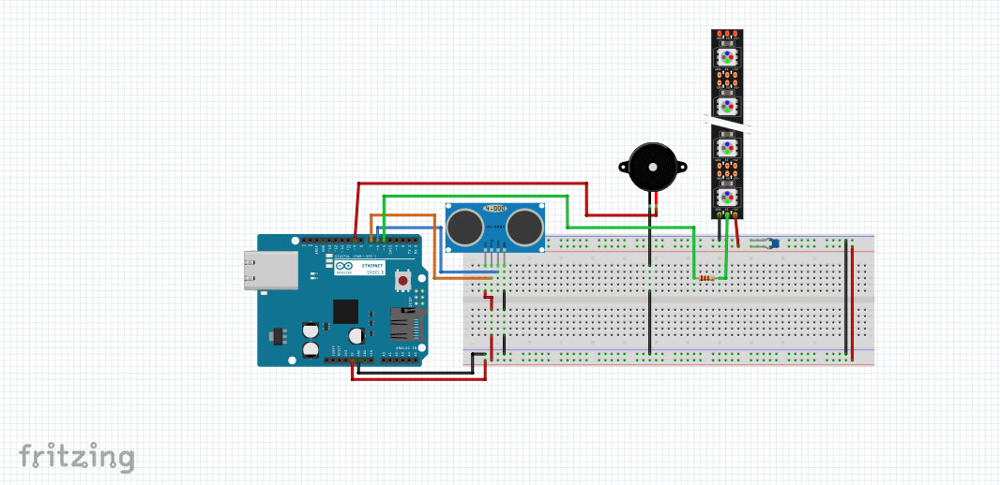

Web de Carla
Web de Carla
Projecte de final de curs
Creació d'una alarma amb arduino
Amb tots els coneixements adquirits durant el curs, hem pogut fer el nostre propi circuit d'arduino (amb codi onclòs) que ens ha servit per
crear una alarma intel·ligent.
L’objectiu principal del projecte era detectar la presència d’un objecte proper mitjançant un sensor ulrasònic, i com a resposta, activar una alarma visual (amb una tira de LED) i sonora (amb un altaveu).
El sistema es basa en l’ús del sensor ultrasònic HC-SR04, que permet mesurar distàncies en temps real. Quan un objecte s’aproxima a menys de 20 cm, l’Arduino activa dues sortides:
- Una senyal que encén una tira de LED de color vermell que la pots modificar perquè s'encenguin més o menys LEDs.
- Una senyal cap a l’altaveu, que reprodueix un àudio durant uns segons, generant una alarma sonora.
Tot el circuit s’ha muntat sobre una protoboard, i s’ha programat l’Arduino amb l’entorn Arduino IDE, aplicant lògica condicional i control del temps amb delay().
En aquest projecte hem utilitzat els següents components:
Arduino UNO Rev3
Arduino Education Shield
Mini condensador ceràmic de 100pf
Cable Jumper mascle-mascle
Altaveu 5cm 8 Ohm - 0.5W
Tira LED Adafruit
Sensor de distància per ultraso HC-SR04
Resistència de 220 &ohm
Tarjeta Micro SD de 16 GB
Àudio d'alarma en format wav
Protoboard (molt recomenable)
Què hem fet?
- Connexió i prova del sensor ultrasònic per llegir distàncies correctament.
- Implementació del codi que mesura la distància i activa l’alarma si és inferior a la distància programada (20 cm)
- Integració d’una targeta SD amb un àudio personalitzat.
- Integració de tots els components en un circuit funcional.
- Verificació i proves per ajustar sensibilitat, distància d’activació i sons de l'altaveu
Problemes trobats
Durant el desenvolupament, han sorgit diversos reptes que hem hagut de resoldre:
- Errors en les connexions del sensor ultrasònic: Al principi vam confondre els pins Trig i Echo, cosa que impedia detectar correctament les distàncies.
- Problemes amb la targeta SD: Vam intentar fer servir una targeta SD amb música perquè l’altaveu reproduís sons reals, però no vam aconseguir que l’Arduino llegís correctament els arxius de la SD. Al final vam mirar el datasheet de la placa shiel i vam trobar l'error
- Problemes amb la tira LED: No vam tenir en compte que necessitavem un condensador perquè funciones, al moment que ho vam implementar va funcionar tot.
- problemes amb el codi:Ens va passar que els codis per separat de reproduccio de targeta i il·luminacio de la tira LED funcionaven bé, però si els juntàvem no funcionaven. Finalment ho vam poder resoldre a base de proves.

Aquí teniu el codi que hem utilitzat:
#include
#include
#include
#include
// Pines
const int PIN_TRIG = 7;
const int PIN_ECHO = 6;
const int PIN_BUZZER = 9;
const int PIN_LED = 5;
const int PIN_SD = 4;
// Objeto para el audio
TMRpcm audio;
Adafruit_NeoPixel tira = Adafruit_NeoPixel(4, PIN_LED, NEO_GRB + NEO_KHZ800);
// Configuraci�ón de distancia
const int DISTANCIA_UMBRAL = 20;
const unsigned long TIEMPO_SIN_DETECCION = 1000;
bool alarmaActiva = false;
unsigned long tiempoUltimaDeteccion = 0;
int ledActual = 0;
void setup() {
Serial.begin(9600);
pinMode(PIN_TRIG, OUTPUT);
pinMode(PIN_ECHO, INPUT);
tira.begin();
tira.show(); // Apagar todos los LEDs
// Inicializar SD
if (!SD.begin(PIN_SD)) {
Serial.println("Error al iniciar SD");
return;
}
audio.speakerPin = PIN_BUZZER;
audio.setVolume(6); // Volumen de 0 a 7
Serial.println("Listo");
}
void loop() {
long duracion, distancia;
digitalWrite(PIN_TRIG, LOW);
delayMicroseconds(2);
digitalWrite(PIN_TRIG, HIGH);
delayMicroseconds(10);
digitalWrite(PIN_TRIG, LOW);
duracion = pulseIn(PIN_ECHO, HIGH);
distancia = duracion * 0.034 / 2;
if (distancia > 0 && distancia <= DISTANCIA_UMBRAL) {
tiempoUltimaDeteccion = millis();
if (!alarmaActiva) {
audio.play("alarma.wav");
alarmaActiva = true;
}
// Animación LED (uno a uno en rojo)
tira.clear();
tira.setPixelColor(ledActual, tira.Color(255, 0, 0));
tira.show();
ledActual = (ledActual + 1) % tira.numPixels();
delay(100);
} else if (alarmaActiva && (millis() - tiempoUltimaDeteccion > TIEMPO_SIN_DETECCION)) {
audio.stopPlayback(); // Detener el audio
tira.clear(); // Apagar LEDs
tira.show();
alarmaActiva = false;
}
}
Projecte funcionant